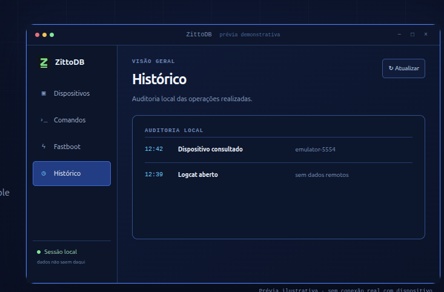

Dispositivos
Descoberta via USB, Wi-Fi e emuladores, com serial e estado explícitos.
Abrir guia →LINUX · OPEN SOURCE · LOCAL-FIRST
Interface gráfica leve e local-first para ADB, scrcpy e fastboot no Linux.
Gerencie dispositivos Android, execute comandos, explore arquivos, controle a tela e consulte logs em uma interface moderna, sem conta e sem telemetria.

RECURSOS DOCUMENTADOS
O ZittoDB organiza as ferramentas Android que você já usa sem esconder o que será executado.
Descoberta via USB, Wi-Fi e emuladores, com serial e estado explícitos.
Abrir guia →Bateria, armazenamento, rede, memória, propriedades e patch de segurança.
Abrir guia →Integração com scrcpy, presets de qualidade, orientação e gravação MP4.
Ver recursos →Liste, instale, abra, ative, desative, limpe dados e extraia APKs.
Ver recursos →Perfis conservador a avançado, operação em lote e reversão pelo Histórico.
Ver recursos →Navegue no /sdcard, crie, renomeie, apague e faça push/pull com progresso.
Ver recursos →Shell persistente por dispositivo e logs em streaming com filtros e pausa.
Ver recursos →getvar, reinícios, flash, erase, lock e unlock com confirmação digitada.
Ver recursos →Auditoria JSONL, operações reversíveis e últimos dispositivos vistos localmente.
Ler segurança →O backend Rust controla allowlist, serial, argumentos, processos e confirmações.
Ler segurança →COMO FUNCIONA
O ZittoDB é uma interface para ferramentas Android existentes, não um substituto para elas.
SEGURANÇA E PRIVACIDADE
As afirmações abaixo refletem o código e a documentação atuais do projeto.
Ler modelo de segurança no GitHub ↗O frontend não executa processos; o Rust controla allowlist, argumentos e timeouts.
Cada operação é direcionada ao serial selecionado, sem alvo implícito.
Operações sensíveis exigem confirmação digitada conforme a implementação.
Configurações, logs e auditoria permanecem na máquina; a consulta de update usa metadados públicos do GitHub.
COMECE NO LINUX
Baixe uma release oficial e instale as ferramentas que o ZittoDB utiliza no sistema.
Abrir Releases ↗chmod +x ./*.AppImage
./Zittodb-*.AppImagesudo apt install ./*.debsudo apt install adb fastboot scrcpyDOCUMENTAÇÃO E COMUNIDADE
FEITO PARA QUEM PREFERE SABER
Diretamente no seu Linux, com as ferramentas que você já conhece.